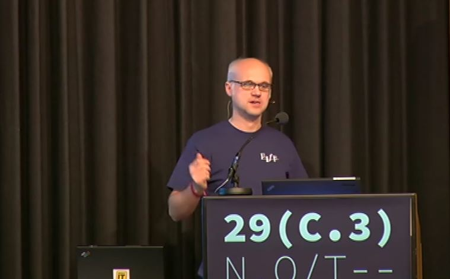

How YOU can improve fairness of hardware
32C3 - Hamburg 2015
Presented by the Fairlötet team / fairloetet.de
Who we are
Socialized right here
 Sind faire Computer möglich? @29C3What is the actual problem?
The quick versionInformal artisanal mining
 Miners working at a tin ore mine in Tanjung Pesona, District Sungai Liat, Bangka, Indonesia.
Miners working at a tin ore mine in Tanjung Pesona, District Sungai Liat, Bangka, Indonesia.
Child labor
 Febri Andika, a young tin miner
Febri Andika, a young tin miner
Health and safety
 Suge, a small-scale independent tin miner, suffered a broken arm and leg when the pit he was working in collapsed. His three friends were killed.
Suge, a small-scale independent tin miner, suffered a broken arm and leg when the pit he was working in collapsed. His three friends were killed.
Environment
 A disused tin mine near Bencah village.
A disused tin mine near Bencah village.
What we did
- went to Maker Fair to tell people about the issues
- brainstorming workshop on improving fair mouse
- tin as low hanging fruit?
- maybe get recycled tin?
- where to begin?
Start a club
Get press coverage
First Contact
A year later
Lessons learned
- plant the seed
- medium sized companies are ready!
- the show huge initiative
And now to YOU
Lets find the next project/company/goal
Workshop, tommorrow @ room 23, 3pm
The future

Links
- http://fairloetet.de
- http://faire-computer.de
- http://nager-it.de